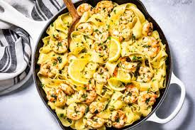

Lemon garlic butter shrimp pasta

Ingredients:
- Eight ounces of pasta (spaghetti or linguine both work well)
- One pound of large, deveined and peeled shrimp
- Four tsp butter
- four minced garlic cloves
- One lemon, squeezed and sliced
- A quarter cup of chicken broth
- To taste, add salt and pepper.
- Flakes of red pepper (optional)
- Chop some fresh parsley for garnish
Instructions:
- Pasta should be cooked as directed on the package until it is al dente. After draining, set away.
- Melt two tablespoons of butter in a large skillet over medium heat. Add the minced garlic and simmer for one minute, or until fragrant.
- When the shrimp are pink and opaque, add them to the skillet and cook for two to three minutes on each side. After taking the shrimp out of the skillet, set it aside.
- Add the chicken stock, lemon zest, juice, and the remaining 2 tablespoons of butter to the same skillet. Simmer and cook for two to three minutes.
- Put the shrimp back in the skillet and toss to coat with the butter sauce made with lemon and garlic.
- When the pasta is ready, add it to the skillet and toss it to thoroughly coat it with sauce.
- If preferred, add red pepper flakes, salt, and pepper for seasoning.
- Before serving, garnish with chopped parsley. Savor the flavor of your shrimp pasta with lemon garlic butter!